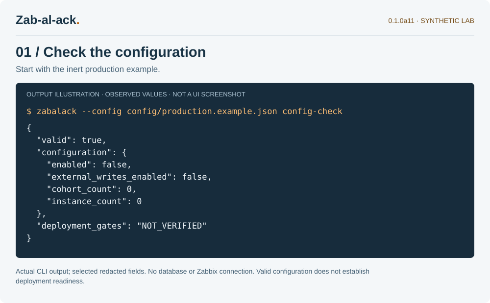
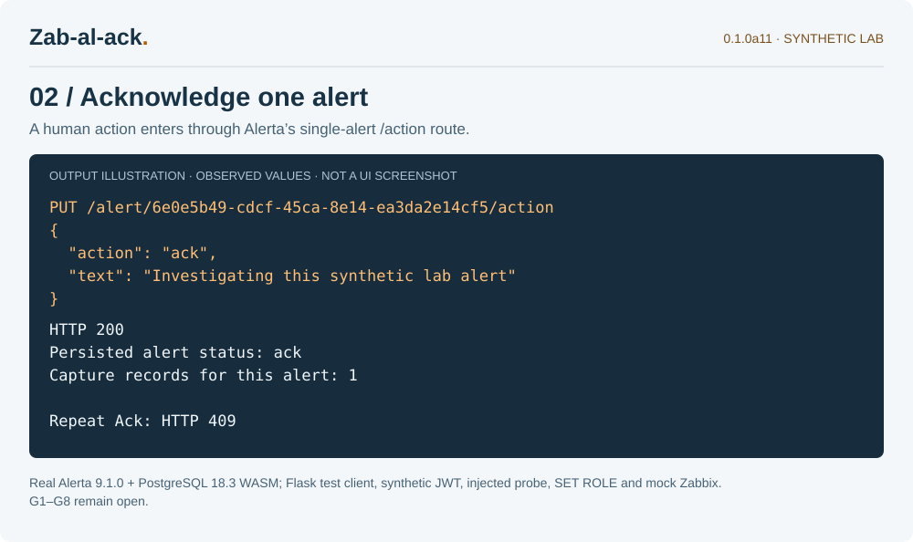
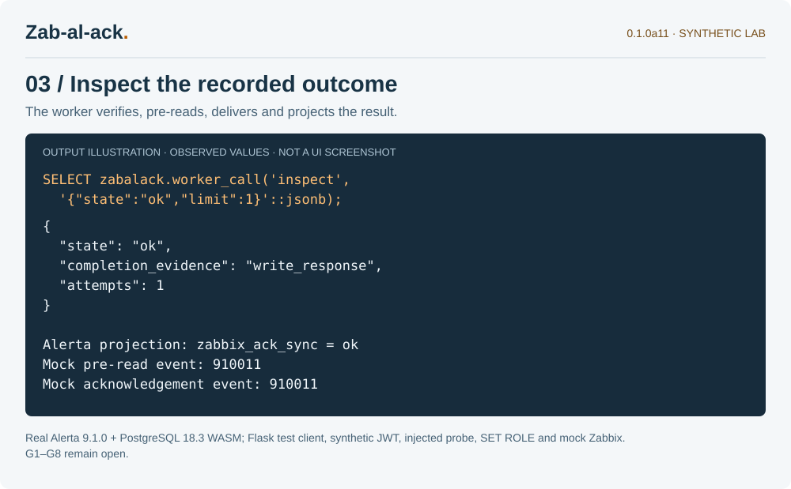

Follow an acknowledgement through the lab
a11 makes the operational story easier to follow: what a safe configuration looks like, what the single-alert action records, and where the delivery result appears. The runtime behaviour and SQL are unchanged from a10.
A note about these images: these are clearly labelled illustrations of output from executed a11 lab code, not Alerta or Zabbix UI screenshots. The text, SVG source, transcript pages and reproduction command are included in the package.
Start with writes disabled
The first view comes from the real CLI’s config-check command against the inert production example. A valid configuration still has zero selected cohorts and endpoints, and external writes remain disabled.

A local acknowledgement is one step
The next view follows a synthetic human action through the pinned Alerta action handler and PostgreSQL capture. The successful request records one capture; a repeat Ack returns the upstream model’s HTTP 409. This fixture uses a test client and synthetic JWT, so it makes no browser-login or installed-service claim.

Read what the worker recorded
The worker verifies the captured binding, pre-reads the original event and records one mock acknowledgement. The ledger reports ok with write_response evidence and one attempt; the Alerta projection becomes ok too. The Zabbix client is an in-memory mock. No real event was acknowledged.

Keep the images reproducible
Run TZ=UTC .venv/bin/python tools/capture_docs.py --isolated-lab in the matching source checkout. It generates selected output, HTML transcript pages and SVG figures, with hashes and source/harness digests. Failed execution does not produce a final capture record. The docs retain copyable examples, descriptive alt text and links to full-size images.
a10’s 41 native cases, five real Zabbix cases and four installed-wheel service-lab cases remain historical results. They were not rerun for this documentation candidate. Current executed and skipped checks are listed in the a11 package. The eight deployment gates and the reference webhook transport limitation remain open.
Start with the illustrated technical walkthrough, or read the preceding service-lab post.
Zab-al-ack is independent of Alerta and Zabbix. Public package and repository ownership are still being prepared. The website is informational and does not connect to monitoring systems.